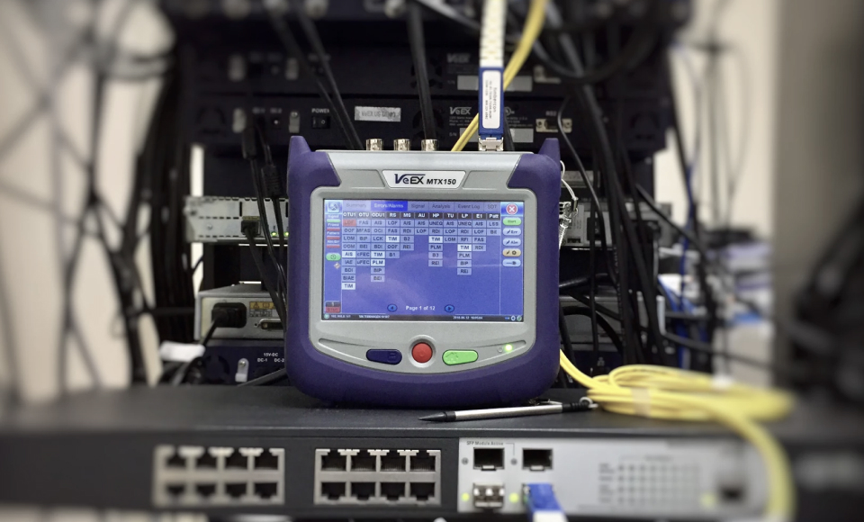

Главная / О компании / Новости / outSource/wi-fi построил Wi-Fi сеть «Росатому» и ИЗТТ
outSource/wi-fi построил Wi-Fi сеть «Росатому» и ИЗТТ
05 декабря 2018
5 мин
Компания «outSource/wi-fi» построила беспроводную Wi-Fi-сеть в торгово-производственном холдинге «Росатом». Теперь Wi-Fi могут пользоваться 3 тысячи сотрудников «Росатома» одновременно. «outSource/wi-fi» также организовал сеть Wi-Fi на Ижевском заводе тепловой техники (ИЗТТ), который принадлежит холдингу.
«Росатом» с 1996 года производит климатическую и инженерную технику, предоставляет услуги по ее проектированию, монтажу, поставки и сервисному обслуживанию. Помимо России, холдинг ведет свою деятельность в странах СНГ и Балтии.
До проекта в «Росатоме» работала Wi-Fi-сеть, но её скорость не позволяла сотрудникам холдинга быстро обмениваться данными через Интернет. Соединение порой резко обрывалось, что создавало сложности в общении сотрудников «Росатома» с клиентами в режиме онлайн.
До проекта в «Росатоме» работала Wi-Fi-сеть, но её скорость не позволяла сотрудникам холдинга быстро обмениваться данными через Интернет. Соединение порой резко обрывалось, что создавало сложности в общении сотрудников «Росатома» с клиентами в режиме онлайн.

Радиообследование объектов
«Росатому» требовалась бесперебойная и высокоскоростная Wi-Fi-сеть. Для ее создания были приглашены специалисты outSource/wi-fi. Им нужно было развернуть Wi-Fi-сеть в офисе общей площадью 9 500 м2 и учесть все требования холдинга по безопасности и отказоустойчивости сети.
Специалисты outSource/wi-fi провели работы по проектированию беспроводной сети, ее настройке и тестированию. Проектирование беспроводной сети выполнено на основе данных, которые были получены в результате проведённой процедуры SiteSurvey в типовых областях и комплексного моделирования с помощью специализированного ПО.
Специалисты outSource/wi-fi провели работы по проектированию беспроводной сети, ее настройке и тестированию. Проектирование беспроводной сети выполнено на основе данных, которые были получены в результате проведённой процедуры SiteSurvey в типовых областях и комплексного моделирования с помощью специализированного ПО.

Настройка оборудования
Специалисты компании провели работы по проектированию беспроводной сети, ее настройке и тестированию. Проектирование беспроводной сети выполнено на основе данных, которые были получены в результате проведённой процедуры SiteSurvey в типовых областях и комплексного моделирования с помощью специализированного ПО.